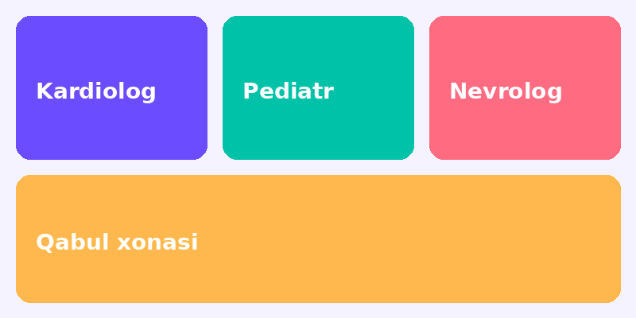

Navbatda turmang. Vaqtingizni oldindan band qiling.
ShifoNavbat tizimi yordamida klinika va shifokorni tanlab, qabul vaqtini bir necha daqiqada belgilashingiz mumkin.
Navbat olish ShifokorlarShifoNavbat tizimi yordamida klinika va shifokorni tanlab, qabul vaqtini bir necha daqiqada belgilashingiz mumkin.
Navbat olish ShifokorlarKerakli boʻlimga oʻting.
| Shifokor | Mutaxassislik | Qabul vaqti | ||
|---|---|---|---|---|
| Dushanba | Chorshanba | Juma | ||
| Dr. Dilshod Rahimov | Kardiolog | 09:00–13:00 | 09:00–13:00 | 14:00–17:00 |
| Dr. Malika Yusupova | Pediatr | 10:00–14:00 | 10:00–14:00 | 10:00–14:00 |
| Dr. Aziz Karimov | Nevrolog | 09:00–12:00 | 13:00–17:00 | 09:00–12:00 |
| Chiziq bilan oʻchirilgan vaqtlar band. | ||||
Bemorlar uchun qabul qoidalari:
Qabul qoidalari (PDF)